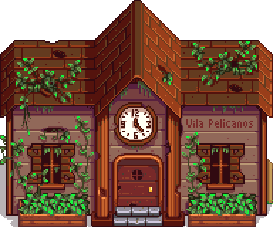

Stardew Guia
Início
Sobre
Serviços
Contato
Stardew Guia - Aquário Comunitário
Todas as Tags
Centro Comunitário
Rios
Lagos
Oceano
Covos
Minas
Deserto
Ilha Gengibre
Bosque Secreto
---ESTAÇÕES---
Primavera
Verão
Outono
Inverno
---HORÁRIO---
Qualquer Horário
6:00 – 11:00
6:00 – 14:00
6:00 – 19:00
6:00 – 20:00
6:00 – 22:00
12:00 – 2:00
12:00 – 16:00
16:00 – 2:00
18:00 – 2:00
22:00 – 2:00
---TEMPO---
Chuvoso
Sol
 Centro Comunitário
Ilha Gengibre
Lendário
Rios
Lagos
Oceano
Covos
Minas
Deserto
Primavera
Verão
Outono
Inverno
Chuvoso
Sol